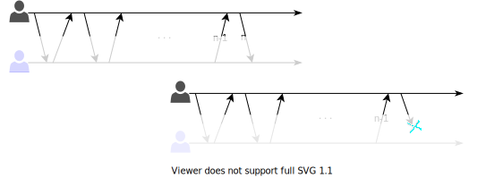
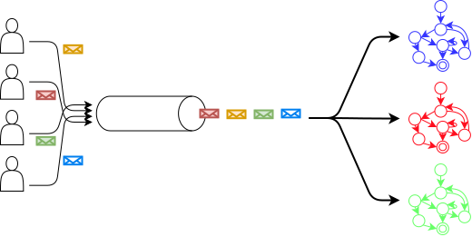
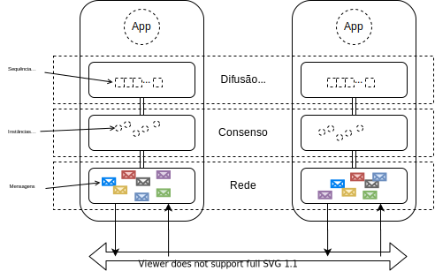

Tolerância a Falhas
Dependabilidade
Nós escrevemos software para que resolvam problemas de espectro bem amplo, indo, do controle de braços robóticos em cirurgias remotas à sistemas de comércio eletrônico, do controle de usinas hidroelétricas à jogos de truco online. Independentemente do problema sendo resolvido, gostaríamos de poder contar com o sistema, de poder depender nele para executar sua tarefa. Desta situação, surge a ideia de dependabilidade, isto é, de um sistema ter a propriedade de se poder depender do mesmo.
Dizemos que um componente \(C\) depende de um componente \(C'\) se a corretude do comportamento de \(C\) depende da corretude do componente \(C'\). E que um componente é "dependável" (dependable) na medida em que outros podem depender dele. A dependabilidade é essencial aos componentes de sistemas distribuídos, afinal, "uma corrente é tão forte quanto seu elo mais fraco."
De acordo com Avizienis et al, tem-se dependabilidade quando os seguintes atributos estão presentes.
- Disponibilidade (Availability) - Prontidão para uso.
- Confiabilidade/Fiabilidade (Reliability) - Continuidade do serviço.
- Segurança (Safety) - Tolerância a catástrofes.
- Integridade (Integrity) - Tolerância a modificações.
- Manutenabilidade (Maintainability) - Facilidade de reparo.
Outra propriedade importante neste contexto é a
- Confidencialidade (Confidentiality), a garantia de que a informação somente é acessível a quem é devido.
A combinação de Disponibilidade, Integridade e Confidencialidade é também chamada de Segurança (Security).
Mas o que significa, na prática, ser dependável e seguro (secure)? Para respondermos a esta questão, primeiro precisamos entender os tipos de problemas que aparecem em vários níveis, desde o seu desenvolvimento até seu uso.
Falhas, Erros e Defeitos
No nível mais básico dos problemas a serem contornados para se obter dependabilidade, temos as falhas (defect, fault, para alguns, falta), que é um erro no desenvolvimento do sistema, como bugs ou defeitos de fabricação, que o leva a ficar diferente do que foi especificado.
Uma falha existe mesmo se for raramente ativada e mesmo se seus efeitos nunca forem percebidos.
Por exemplo, se o código tem um <= em vez de < na especificação de uma iteração, mas se uma condição faz com que a iteração seja interrompida antes, o código ainda tem uma falha.
No segundo nível, temos o erro (error), que é a manifestação da falha levando a algum comportamento indevido. No exemplo acima, um erro seria quando a iteração passasse do ponto correto por causa do <=, por exemplo, na hora de escrever uma string em um array, estourando o limite do array na pilha mas sobrescrevendo uma variável que não seja mais usada.
O erro pode passar despercebido, mas ainda assim é um erro.
Finalmente, no terceiro nível, temos os defeitos (failure, para alguns, falha), um erro percebido pelo usuário. Continuando o exemplo, um stack overflow que leva a uma falha de segmentação, leva a um defeito.
Quando um componente manifesta um defeito, outros componentes que dele dependem, internalizarão entradas indevidas, uma falha externa, o que levará a seu próprio estado interno a estar errôneo e possivelmente também manifestar um defeito. Esta cadeia pode levar cenários catastróficos.
Falhas Famosas
O Ariane 5 foi um foguete desenvolvido pela agencia espacial européia que explodiu durante o lançamento.
The Explosion of the Ariane 5
On June 4, 1996 an unmanned Ariane 5 rocket launched by the European Space Agency exploded just forty seconds after its lift-off [...] after a decade of development costing $7B. The destroyed rocket and its cargo were valued at $500M. [...] the failure was a software error [...] a 64 bit floating point number [...] was converted to a 16 bit signed integer. The number was larger than 32,767, the largest integer storeable in a 16 bit signed integer, and thus the conversion failed.

O erro gerado foi tratado como input, causando outros erros, que geraram instabilidade e que levou o sistema a se auto-destruir.
O avião 787 dreamliner, da Boeing, tem um problema que tornar necessário reiniciar o sistema elétrico a cada 248 dias, ou o mesmo pode ter uma pane.
Quote
The plane’s electrical generators fall into a failsafe mode if kept continuously powered on for 248 days. The 787 has four such main generator-control units that, if powered on at the same time, could fail simultaneously and cause a complete electrical shutdown.
Segundo as "más línguas", o problema é que acontece um overflow em um contador de tempo
Quote
248 days == 2^31 100ths of a second.
— Fiora @ 日本語でFF14 (@FioraAeterna) May 1, 2015
even in 2015, our airplanes have integer overflow bugs https://t.co/6Z8d4y9gjM
Neste outro caso envolvendo a Boeing, um sensor é usado para detectar se o avião estava subindo rápido demais e correndo o risco de perder sustentação, um comportamento que se verificou comum no 737 Max por causa dos grandes motores usados nele e que o diferenciam do 737 original. Se o risco é detectado, um sistema automatizado força o nariz do avião para baixo para corrigir o problema. Contudo, no 737 Max apenas um sensor é usado e no caso de falha do mesmo, o avião é forçado para baixo e em direção ao solo, o que levou à morte de centenas de pessoas.1
Em 2018 a Subaru fez um recall gigante, de mais de 1 milhão de unidades de um seus modelos de SUV, porquê uma falha em um software fez com que soldagens fossem feitas incorretamente no chassis dos veículos. O erro era irreparável, levando a grandes prejuízos.
![[Recall Subaru()https://spectrum.ieee.org/riskfactor/computing/it/coding-error-leads-293-subaru-ascents-to-the-car-crusher)]](images/subaru.png)
Root cause analysis
Quando defeitos aparecem, é importante identificar suas causas, isto é, a cadeia de eventos que o levou a acontecer. Algumas empresas publicam a root cause analysis ou a análise post-mortem para a comunidade como forma de compartilhar conhecimento e também por questões de transparência. Veja esta compilação para uma extensa lista de análises.
Como alcançar dependabilidade
Falhas são um fato da vida, uma constante no desenvolvimento de sistemas. Mas se o objetivo é a dependabilidade, precisamos de formas de lidar com falhas, previnindo, removendo e tolerando-as.
A prevenção de falhas acontece por meio de técnicas bem estabelecidas de engenharia. No caso de sistemas de software, modularização, linguagens de programação fortemente tipadas e encapsulamento são passos essencias. Uso de especificações formais, testadas ou provadas corretas, são outro passo neste sentido. Por exemplo, diversas empresas usam a linguagem TLA\(^+\) para verificar a corretude de seus algoritmos2. Outras técnicas envolvidas na prevenção de falhas são análise estática, prova de teoremas, execução simbólica, teste de modelos, etc.
Mesmo uma especificação correta pode produzir um sistema com falhas pois a tradução de especificações formais para código é um passo complexo. Testes e manutenção do sistema permitem a remoção de falhas que passarem despercebidas pelas tentativas de prevenção.
Testes, contudo, apenas aumentam a confiança no sistema, não sendo capazes de certificar a ausência de problemas. Assim, tenta-se desenvolver os sistemas de forma que, mesmo se falhas ainda estiverem presentes, seus efeitos não sejam percebidos como defeitos, isto é, sistemas que tenha tolerância a falhas (ou prevenção de defeitos).
Para se alcançar tolerância a falhas é necessário detectar e se recuperar de erros. Por exemplo, um sistema de arquivos com journal, como o Ext v3, armazena informação redundantemente e, quando detecta que os dados em sua forma principal estão corrompidos, usa o journal para recuperar os dados, mascarando o erro.
De acordo como Avizienis et al, temos as seguintes técnicas para tolerar falhas:

Um sistema que sofra de falhas recorrentes é um bom candidato a previsão de falhas, em que se estima quando uma falha ocorrerá baseado no histórico. Por exemplo, um sistema que sofra falha por uso excessivo de memória a cada dez dias em uso, pode ser reiniciado no nono dia, em condições controladas, para evitar problemas maiores enquanto a razão do uso excessivo de memória é corrigido.
Classes de Defeitos
Para previnirmos e toleramos com falhas, precisamos entender como se manifestam e, para isso, uma classificação é essencial.
Quebra
Falhas de quebra (crash) são falhas em que o componente para de funcionar, irreversivelmente. Uma vez que o componente cessa seu funcionamento, qualquer comunicação com o mesmo é interrompida e pode dar bons indicativos da falha aos outros componentes. Em um sistema assíncrono, contudo, não há garantias de que esta detecção do defeito será correta.
Alguns sistemas, denominados fail-stop, forçam-se a parar de funcionar quando percebem um defeito, imitando uma quebra, e implementando um comportamento fail-fast.3 Estes sistemas podem emitir um "canto do cisne" para permitir que outros componentes detectem o defeito.
Após pararem, alguns sistemas podem aplicar passos de recuperação e voltar a funcionar, no que é denominado fail-recover. Ao retornar à operação, o processo poderia assumir uma nova identidade.
Omissão
Em um defeito de omissão (omission failure), um componente não executa alguma ação. Por exemplo, uma requisição recebida por um servidor não é executada, um disco não armazena os dados no meio magnético, ou uma mensagem não é transmitida. Este tipo de defeito é difícil de ser identificado pois outros componentes não necessariamente tem acesso direto ao resultado da operação. Por exemplo, se o meio de comunicação se recusou a entregar uma mensagem, então houve um defeito de omissão. Mas se a mensagem é retransmitida até que tenha sua entrega confirmada, então o defeito é mascarado.
Temporização
Em sistemas em que há limites de tempo para a execução de ações, uma violação destes limites é defeito de temporização. Por exemplo, se o meio de comunicação se recusou a entregar uma mensagem, então houve uma falha de omissão. Novamente considerando problemas de transmissão de mensagens, se o meio de comunicação se recusou a entregar uma mensagem que deveria ser entregue dentro de 3ms, então houve um defeito de omissão. Mas se a mensagem é retransmitida até que tenha sua entrega confirmada, mas a mesma é entregue com 5ms, então o mesmo que após o limite para então o defeito é mascarado como um defeito de temporização.
Arbitrários
Um defeito arbitrário ou bizantino é um no qual qualquer comportamento pode acontecer. Por exemplo, uma mensagem pode ser modificada, um servidor pode reiniciar-se constantemente, todos os dados podem ser apagados, ou acesso pode ser dado a quem não é devido. Estes defeitos podem ser causados por agentes mal intencionados, como hackers e vírus.
Hierarquia
Fail-stop \(\subset\) Quebra \(\subset\) Omissão \(\subset\) Temporização \(\subset\) Arbitrária
Falhas intermitentes
Algumas falhas fogem à classificação acima por terem um comportamento especial, se manifestando de forma intermitente, por causa de eventos esparsos como picos de energia, ou pelo comportamento emergente da interação com outros sistemas.
Heisenbug
The name may seem to rhyme well with Heisenberg, but the Heisenbug is actually "a bug that disappears or alters its behavior when one attempts to probe or isolate it." The Freenet Project describes a Heisenbug in certain Java virtual machines.
Bohrbug
The Bohrbug is a sort of antonym of the Heisenbug, as this bug does not disappear or alter its characteristics when it is researched.
Mandelbug
The Mandelbug, named after Benoit Mandelbrot (think Mandelbrot set), is a bug whose underlying causes are so complex and obscure as to make its behavior appear chaotic.
Schroedinbug
The Schroedinbug is a design or implementation bug in a program that doesn't manifest until someone reading source or using the program in an unusual way notices that it never should have worked, at which point the program promptly stops working for everybody until fixed. Here, an Office developer describes "stupid SQL tricks" to get rid of a "classic Schroedinbug."
Correlação entre falhas
Algumas falhas são ativadas por entradas e, neste caso, mesmo que se tenha várias cópias do mesmo sistema, todas falharão uma vez que a entrada problemática acontecer. Este é um cenário em que as falhas não são independentes, mas correlatas. Para evitá-lo, podemos usar n-version programming, que consiste basicamente em ter múltiplas implementções do mesmo sistema desenvolvidas de forma independente, isto é, fazendo uso de um ou mais da seguintes opções:
- múltiplos times
- múltiplos sistemas operacionais
- múltiplas linguagens de programação.
Esta técnica é interessante mais raramente usada, basicamente pelo seu alto custo. Além disso, erros de especificação são reproduzidos e levam times diferentes a produzir erros iguais.
Redundância de Processos
Se remover todas as possbilidades de defeitos de um componente é algo difícil, apostemos na tolerância a falhas. De forma geral, tolerância a falhas é obtida por algum tipo de redundância. Redundância pode ser aplicada em vários níveis, por exemplo, gastando mais tempo na especificação do projeto, ou montando um laboratório de testes mais próximo do ambiente de produção.
Outra forma óbvia de redundância é a replicação de componentes. Por exemplo, pense no pneu estepe de um carro, no gerador de eletricidade de um hospital. Replicação permite remover os pontos únicos de falha (SPOF, Single Point of Failure), ou seja, componentes não dependáveis. Seja como for, redundância implica em mais custos, então o grau de redundância a ser utilizado depende de uma análise custo x benefício.
No caso de um sistema distribuído, quando falamos em redundância, normalmente falamos em processos redundantes, cópias ou réplicas, mesmo que não desevolvidos usando n-version programming Assim, com múltiplas cópias, quando um processo apresenta um defeito, outro podem continuar executando o serviço. Dois modos clássicos de replicação são o primário/cópia e ativo.
No caso da replicação primário/cópia, também conhecida como mestre/escravo, o primário é responsável por lidar com clientes e por informar cópias das modificações de estado.

Como as atualizações de estado fluem do primário para a cópia, é possível que a cópia não tenha o estado mais atual. Para visualizarmos melhor esta situação, vejamos a replicação em cadeia, uma generalização de primário/cópia em que os processos se organizam em um sequência para executar operações.

Atualizações no sistema são sempre direcionadas ao primário, a cabeça da sequência. Leituras, se absolutamente necessitarem dos dados escritos mais recentemente, também devem ser direcionadas à cabeça. Caso contrário, podem ser direcionadas aos processos na cauda, diminuindo a carga de trabalho na cabeça.
No caso da replicação ativa, as várias cópias executam todos os comandos enviados para o sistema, estando assim todas aptas a continuar a executar o serviço. A técnica de replicação de máquinas de estados vista no capítulo anterior é uma materialização da replicação ativa. Como vimos anteriormente, replicação de máquinas de estados utiliza primitivas de comunicação em grupo, mas as vistas anteriormente não são funcionais principalmente por não serem tolerantes a falhas. Vejamos a porquê é difícil desenvolver primitivas tolerantes a falhas.
Problemas de Acordo
Há diversas primitivas de comunicação em grupo, das quais se destaca a difusão atômica, primitiva pela qual se pode facilmente implementar replicação de máquina de estados. Difusão atômica, por sua vez, é equivalente ao problema do consenso distribuído, que está no coração da classe de problemas de acordo. Problemas de acordo são aqueles em que processos devem concordar em quais ações executar. Dependendo do modelo computacional em que o problema deve ser resolvido, soluções vão de triviais a impossíveis. Vejamos um exemplo.
Uma história de três exércitos
Era uma vez uma cidade estado no alto de uma montanha. A despeito de sofrer de falta de água, afinal, estava no alto de uma montanha, a cidade era invejada pelos vizinhos. Como a cidade era muito bem fortificada, ela poderia se defender de qualquer ataque em uma única frente. Se atacada em duas frentes, contudo, cairia. Sabendo disso, o rei de uma das cidades vizinhas resolveu tomar a cidade e repartiu suas forças em dois exércitos sob o comando de Alice (a sociedade é muito feminista naquela época) e Bastião (sim, Bastião, não Bob).4
Um complicador no ataque é que a comunicação entre os dois exércitos é feita por mensageiros que devem contornar a montanha para alcançar o outro exército. O trajeto é complexo e cheio de armadilhas e por isso mensageiros podem se perder e demorar um longo tempo para chegar ou até mesmo serem mortos e nunca entregarem suas mensagens.
Alice, a comandante mais sênior, deve decidir quando atacar, pode exemplo simplesmente ordenando "Atacar no dia 3, ao nascer do sol." Bastião obedecerá a ordem de atacar contanto que esteja certo de que Alice também atacará, e é justamente daí que vem a dificuldade do problema. Se mensagens podem ser perdidas, Alice não tem garantias de que Bastião recebeu o comando e por isso não pode simplesmente considerar como certo o ataque de Bastião. Como o problema pode ser resolvido?
Uma resposta natural é usar mensagens de confirmação. Isto é, quando Bastião recebe uma ordem, envia um mensageiro de volta para Alice com uma confirmação da recepção. Alice ao receber tal mensagem, sabe que Bastião executará a ordem, correto? Mas não é tão simples assim no caso da ordem de atacar. Lembre-se que qualquer exército que ataque sozinho, perderá, seja Alice ou Bastião. Por isso, ao enviar uma mensagem de confirmação do ataque, Bastião precisa estar certo de que Alice a recebeu, ou atacará sozinho. Novamente podemos apelar para uma mensagem de confirmação ou, neste caso, uma confirmação da confirmação. E o problema se reinicia...
Paradoxo dos 2 Exércitos
- \(A\) e \(B\) devem concordar na hora do ataque.
- \(A\) ataca se estiver certo que \(B\) atacará.
- \(B\) ataca se estiver certo que \(A\) atacará.
- A comunicação por troca de mensagens.
- Mensagens podem ser arbitrariamente atrasadas.
- Mensagens podem ser perdidas.
Como um exército tem certeza que o outro irá atacar?
Suponhamos que há um algoritmo correto que executa uma sequência finita de troca de mensagens em que ao final tanto Alice quanto Bastião estão seguros, e corretos em sua segurança, de que o outro também atacará. Seja \(n\) o número máximo de mensagens trocadas. Em uma execução em que todas as \(n\) mensagens possíveis são usadas, suponha sem perda de generalidade que Alice enviou a \(n\)-ésima mensagem.
Observe que, do ponto de vista de Alice, uma execução do algoritmo em que a nenhuma mensagem é perdida, é indistinguível de uma execução em que a \(n\)-ésima mensagem é perdida.

Dado que ao final da primeira execução completa Alice ataca, no final da execução onde a mensagem \(n\) é perdida, Alice também deve atacar. Mas se o algoritmo é correto, então também Bastião ataca, mesmo sem ter recebido a enésima mensagem. Logo, a enésima mensagem é desnecessária ao algoritmo, que deve funcionar com \(n-1\) mensagens. Repetindo-se o argumento mais \(n-1\) vezes, temos que o algoritmo deve funcionar com zero mensagens, o que é um absurdo. Logo não existem algoritmos corretos para o problema como definido, isto é, em que mensagens podem ser perdidas; é impossível resolver o problema.
Apesar de ser impossível resolver este problema aparentemente simples, devemos fazê-lo frequentemente no mundo real. Como reconciliar estes dois fatos?
Impossibilidade
Quando dizemos que é impossível resolver um problema queremos dizer que é impossível produzir um algoritmo que sempre levará a uma resposta correta. Isto quer dizer que podemos produzir algoritmos, mas ou eles às vezes levarão a respostas incorretas ou eles às vezes não levarão a respostas; ambos podem ser úteis na prática.
Por exemplo, ainda no problema dos exércitos tentando tomar a cidade, suponha que em vez de mandar um único mensageiro com a ordem de ataque, Alice envie 100, ou 200, ou 1000. A confiança de Alice de que Bastião também atcaria, seria muito maior e não precisaria receber uma confirmação de entrega de mensagens. Esta abordagem faria com com que o ataque funcionasse com uma certa probabilidade, mas com uma pequena probabilidade \(P\) de levar a um ataque fracassado, onde \(P\) pode ser feita tão pequena quanto se "queira".
Resultados de impossibilidade abundam na área de computação distribuída5 e não podem nos desencorajar de continuar a buscar soluções práticas.
Consenso
O problema que os comandantes estão tentando resolver é, essencialmente, o problema do Consenso Distribuído. Neste problema, cada um de um conjunto de processos propõe um único valor, sua proposta. O objetivo é decidir um dentre os valores propostos, garantindo as seguintes propriedades.
- Validade: Somente um valor proposto pode ser decidido.
- Acordo: Se um processo decide-se por \(v\) e outro por \(w\), então \(v = w\)
- Terminação: Todo processo não defeituoso decide-se.
Um processo é defeituoso se apresentou um defeito; como estamos considerando apenas defeitos do tipo quebra, um processo é defeituso se ele parou de funcionar. Um processo que não é defeituoso é um processo correto.
É impossível resolver deterministicamente o problema do consenso em sistema assíncrono sujeito a falhas6. Mas o consenso é resolvido frequentemente em sistemas assíncronos sujeitos a falhas. Isso porque normalmente estes sistemas se comportam sincronamente. Há diversos algoritmos de consenso que terminam quando o sistema se comporta bem, sendo os mais famosos, atualmente, Raft e Paxos
A grande razão para que seja impossível chegar a um acordo entre processos neste modelo é a impossibilidade de diferenciar processos defeituosos de processos corretos mas lentos. Em termos do paradoxo dos 2 generais, a resposta do comandante não chegou porquê ele morreu ou porquê ele está demorando para responder? Os detectores de defeito abstraem este problema.
Detectores de Defeitos
Chandra e Toueg 7 introduziram o conceito de Detectores de Defeitos Não Confiáveis. Um detector de defeitos pode ser visto como oráculo distribuído, com módulos acoplados aos processos do sistema e que trabalha determinando o estado funcional dos outros processos.
Todo
figura
Os detectores de defeitos não podem ser implementados em sistemas totalmente assíncronos. Em ambientes parcialmente síncronos, nos quais os processos dispõem de temporizadores precisos, um detector pode contar a passagem do tempo nos intervalos de comunicação com outros processos e, considerando um limite de tempo para estes intervalos, tentar determinar se tais processos encontram-se defeituosos ou não. Esta determinação é por certo imprecisa, e os detectores podem voltar atrás em suas suspeitas tão logo percebam um erro. Entretanto, a despeito desta incerteza, a informação provida por estes detectores já é suficiente para que se alcance o consenso, salvo a restrição de que a maioria dos processos não sofra defeitos e que os mesmos provejam certas propriedades mínimas, descritas adiante. Os detectores não confiáveis encapsulam, de certa forma, o sincronismo necessário à resolução do consenso.
Chandra e Toueg classificaram os detectores de defeitos segundo suas características de completude (completeness) e acurácia (accuracy), ou seja, a capacidade de suspeitar de um processo defeituoso e a capacidade de não suspeitar de um processo correto, respectivamente. Alguns níveis destas propriedades são descritos a seguir:
- Completude Forte - A partir de algum instante futuro, todo processo defeituoso é suspeito permanentemente por todos os processos corretos.
- Completude Fraca - A partir de algum instante futuro, todo processo defeituoso é suspeito permanentemente por algum processo correto.
- Precisão Forte - Todos os processos são suspeitos somente após terem apresentado defeito.
- Precisão Fraca - Algum processo correto nunca é suspeito de ter apresentado defeito.
- Precisão Eventual Forte - A partir de algum instante futuro, todos os processos são suspeitos somente após apresentarem defeito.
- Precisão Eventual Fraca - A partir de algum instante futuro, algum processo ativo nunca é suspeito antes de ter apresentado defeito.
Chandra, Hadzilacos e Toueg demonstram que detector mais fraco com o qual se pode resolver consenso tem as propriedades de completude fraca e acucárias eventual fraca.8 Este detector, conhecido como \(\diamont W\) e é implementável em sistemas nos quais há um limite superior de tempo para a transmissão de mensagens, mesmo que este limite seja desconhecido. Vários protocolos de consenso utilizam o detector equivalente, \(\diamond S\), equivalente ao \(\diamond W\) mas com completude forte. Estes protocolos são escritos de forma que se o limite superior não existe, o protocolo não termina; um resultado errado nunca é alcançado.
Difusão Totalmente Ordenada
Se pudermos resolver o consenso, podemos então resolver o problema da difusão atômica e com ela implementar a replicação de máquinas de estados. Relembrando, na difusão Totalmente Ordenada (Total Order Multicast) temos que:
- Difusão: mensagens são enviadas de 1 para n (comunicação em grupo)
- Totalmente Ordenada: todos os processos entregam as mensagens na mesma ordem.

Para fazermos isso, precisamos primeiro formalizar as primitivas em vários níveis da resolução do problema. No nível do canal de comunicação, da rede, processos enviam e recebem mensagens. No nível do consenso, processos fazem propostas e aprendem um valor decidido. Para chegar a uma única decisão, várias mensagens podem ser enviadas e recebidas. No nível da difusão atômica, mensagens são difundidas e entregues. Se implementado sobre o consenso, para uma difusão ser bem sucedida, uma instância de consenso é necessária.
Primitivas de comunicação
- enviar & receber (send & receive) - rede
- propor & decidir (propose & decide) - consenso
- difundir & entregar (broadcast & deliver) - difusão

Dado infinitas instâncias de consenso, pode-se usá-las para resolver difusão atômica usando o seguinte procedimento:
- Ordene as instâncias de consenso.
- Para difundir mensagem \(m\), proponha a mensagem na menor instância \(i\) em que não tiver visto uma decisão.
- Se a decisão de \(i\) não é \(m\), volte para o passo anterior.
- Entregue as decisões na ordem das instâncias.
No exemplo a seguir, duas mensagens, \(m\) e \(m'\) foram difundidas pelas aplicações App1 e App2, respectivamente, por meio do módulo de difusão atômica junto a cada aplicação. O módulo de difusão determina qual a menor instância de consenso ainda não decidida, azul, em que propõem as mensagens. Ao final da instância de conseno, \(m\) é decidida e é entregue pelos módulos de difusão. O módulo ABCast2 insiste na difusão de \(m'\), propondo-a na próxima instância, vermelha, que decide \(m'\) e leva esta mensagem a ser entregue.
Ambas as aplicações, embora tivessem intenções diferentes sobre qual deveria ser a próxima mensagem entregue, entregam-nas na mesma ordem, isto é, primeiro \(m\) e depois \(m'\). Se forem usadas como entrada para algum processamento, na ordem em que foram entregues, as aplicações chegarão ao mesmo estado, em algum momento.
Estudo de Caso do Raft
Raft é um protocolo de difusão atômica associado a um protocolo de eleição de líderes. Líderes são eleitos para mandatos pelo voto de uma maioria de processos, o que garante que nunca existirão dois líderes para um mesmo mandato. Um mandato se estende enquanto o líder mantiver seus seguidores cientes de sua presença, o que faz pelo envio periódico de heartbeats. Atrasos na comunicação ou a falha do líder atual levam a uma suspeita de que o líder falhou, levando a nova eleição e novo mandado. A comunicação necessária para implementar a difusão atômica acontece em piggyback nos heartbeats.
No tutorial The Secret lives of data, podemos ver com mais detalhes como o protocolo funciona. O tutorial, entretando, foge da nomenclatura padrão da área usando log-replication no lugar de difusão atômica (ou totalmente ordenada).
Estudo de Caso: Paxos
Paxos
- Sínodo (Synod): consenso
- Paxos: Difusão Atômica
Outras Ordenações
Como colocado diversas vezes, se todos os processos executam a mesma sequência de comandos determinísticos, todos avançam pelos mesmos estados, implementando a técnica da replicação de máquinas de estados.
Se usada em um sistema de arquivos, por exemplo, a seguinte sequência de comandos levará sempre ao estado final em que há um arquivo /tmp/file2 e uma pasta denominada /dir1.
touch /tmp/file1echo "teste testando" >> /tmp/file2rm /tmp/file1mkdir /dir1
Há outras ordens dos mesmos comandos que levariam ao mesmo efeito, como a seguinte. Alguns protocolos de replicação de máquinas de estados permitem que reordenações ocorram, desde que não afetem o resultado final dos comandos. Contudo, estes protocolos são mais complexos de se implementar e por isso raramente usados.
echo "teste testando" >> /tmp/file2mkdir /dir1touch /tmp/file1rm /tmp/file1
Arcabouços para coordenação
Caso você queira implementar a replicação de máquinas de estados ou qualquer outro solução que possa ser construída sobre primitivas de comunicação em grupo, você tem a opção de implementar um protocolo de difusão atômica desde o zero. A tarefa, contudo, é ingrata.9 Felizmente também tem a opção de usar arcabouços prontos tanto para para comunicação em grupo quanto para diversos outros problemas de coordenaç!ao coordenação comuns em sistemas distribuídos.
Estudo de caso: Ratis
Todo
Estudo de caso: Atomix
- Framework de replicação de máquinas de estados implementada pela Atomix.
- Implementação do Raft
- API simples
- Java 8 (lambdas e futures)
- Página Web
Lambda
-
Classe com um único método.
1 2 3 4 5 6 7 8
class Tarefa implements Runnable { public void run(){ while (true) System.out.println("Bem vindo a um loop infinito"); } } new Thread(new Tarefa()).start(); -
Classe anônima - uso único
1 2 3 4 5 6
new Thread( new Runnable() { public void run(){ while (true) System.out.println("Bem vindo a um loop infinito"); } }).start(); -
Lambda
1 2 3 4
new Thread(() -> { while (true) System.out.println("Bem vindo a um loop infinito"); }).start(); -
Encadeamento (fluent)
1 2 3 4 5
Collection<Pessoa> c = ...; c.stream() .filter(p -> p.idade > 33) .map(Pessoa::sobrenomeNome)//.map(p -> p.sobrenomeNome()) .forEach(s -> System.out.println(s));
Future
-
Promessa de computação e resultado.
1 2
ExecutorService executor = Executors.newSingleThreadExecutor(); Future<Integer> futFib = executor.submit(() -> { return Fibonacci(217)}; -
Quando será executado? Em algum momento.
-
Como pegar o resultado?
1 2 3 4
while (!futFib.isDone()) System.out.println("tah calculando..."); int fib217 = futFib.get(); -
Em qual thread? Em algum thread. Depende do Executor Service usado.
Atomix-Raft
-
Versão >= 2 do copycat
- Melhor desempenho
- Documentação ruim
- https://github.com/atomix/atomix
-
Versão 1.1.4
- Baseado em http://atomix.io/copycat/docs/getting-started/ e https://www.baeldung.com/atomix
- Código funcional em https://github.com/pluxos/atomix_labs
-
Clone e compile o projeto}
- Instale dependências: git, maven e JDK >= 1.8 (lembre-se que gRPC precisa de JDK <= 1.8)
git clone https://github.com/pluxos/atomix_labscd atomix_labscd replicationmvn compilemvn test
Resultado esperado.
1 2 3 4 5 6 7 8 9 | |
Explore o projeto na pasta/URL https://github.com/pluxos/atomix_labs/tree/master/replication/src/main/java/atomix_lab/state_machine) Há três pastas. Analise-as nesta ordem
- type - tipos dos dados mantidos pela replica (Edge e Vertex)
Os tipos são serializable para que o Java saiba como transformá-los em bytes. - command - estruturas que contêm informações para modificar os tipos
Os comandos serão enviadas do cliente para o cluster e são naturalmente serializable. - client - cria comandos e os envia para serem executados no cluster
Respostas podem ser esperadas síncrona ou assincronamente. - server - recebe os comandos na ordem definida pelo Raft e os executa
O projeto foi construído seguindo as instruções no tutorial mencionado antes, saltando-se a parte dos snapshots, isto é:
- crie um projeto maven
eclipse tem template para isso - adicione dependências no pom.xml
como so criei um projeto, coloquei as dependências tanto do cliente quando do servidor - defina Command que modifiquem o estado das réplicas
- defina Queries que consultem o estado das réplicas
- implemente a réplica para lidar com os comandos
- implemente o cliente para emitir comandos
Para executar um servidor, você precisa passar como parâmetro
- identificador do processo (inteiro)
- IP do processo com identificador 0
- porta do processo com identificar 0
- IP do processo com identificador 1
- porta do processo com identificar 1
- ...
Sabendo seu identificador, o servidor sabe em qual porta escutar e em quais IP/porta se conectar.
Execute três servidores. Usando o maven, da linha de comando, fica assim:
1 2 3 4 5 6 7 8 9 10 11 | |
O cliente não precisa de um identificador, apenas dos pares IP/porta dos servidores.
- IP do processo com identificador 0
- porta do processo com identificar 0
- IP do processo com identificador 1
- porta do processo com identificar 1
- ...
Para executá-lo, use o comando
1 2 3 | |
Exercício
Uma vez executado o projeto, modifique-o para incluir uma nova operação (Command) e nova consulta (Query).
Estudo de caso: Zookeeper
Porquê sistemas distribuídos são como zoológicos, com animais de diversas espécies, sendo obrigados a conviver de forma anti-natural, foi criado o Zookeeper
Visão Geral
O quê?
ZooKeeper is a centralized service for maintaining configuration information, naming, providing distributed synchronization, and providing group services. All of these kinds of services are used in some form or another by distributed applications. Each time they are implemented there is a lot of work that goes into fixing the bugs and race conditions that are inevitable. Because of the difficulty of implementing these kinds of services, applications initially usually skimp on them, which make them brittle in the presence of change and difficult to manage. Even when done correctly, different implementations of these services lead to management complexity when the applications are deployed.
O arcabouço foi criado pelo Yahoo! para servir como peça na construção de sistemas distribuídos dentro da empresa.
Por quê?
Coordination services are notoriously hard to get right. They are especially prone to errors such as race conditions and deadlock. The motivation behind ZooKeeper is to relieve distributed applications the responsibility of implementing coordination services from scratch.
Mais tarde o sistema tornou-se Open Source e tornou-se parte de diversos projetos, também abertos e proprietários. A razão de seu sucesso, arrisco dizer, é a simplicidade de sua API, semelhante a um sistema de arquivos.
Como?
ZooKeeper is a distributed, open-source coordination service for distributed applications. It exposes a simple set of primitives that distributed applications can build upon to implement higher level services for synchronization, configuration maintenance, and groups and naming. It is designed to be easy to program to, and uses a data model styled after the familiar directory tree structure of file systems*. It runs in Java and has bindings for both **Java and C.
ZooKeeper allows distributed processes to coordinate with each other through a shared hierarchal namespace which is organized similarly to a standard file system. The name space consists of data registers - called znodes, in ZooKeeper parlance - and these are similar to files and directories. Unlike a typical file system, which is designed for storage, ZooKeeper data is kept in-memory, which means ZooKeeper can achieve high throughput and low latency numbers.
O sistema de arquivos do Zookeeper tem nós denominados znodes, em referência aos i-nodes do mundo Unix.
O znode raiz é denominado / e um filho da raiz nomeado teste é referido como /teste.
Cada znode pode ser visto como arquivo e diretório ao mesmo tempo.

O sistema de arquivos do Zookeeper é replicado em vários nós.

Znodes são manipulados, essencialmente, por 4 operações
- C: create
- R: get
- U: set
- D: delete
- ls *: get children
Znodes são lidos e escritos sempre integralmente. Isto é, não se pode escrever apenas parte do conteúdo do "arquivo". Por isso, recomenda-se que os arquivos sejam sempre pequenos, onde pequeno é relativo.
Os comandos que atualizam dados, como create e delete são enviados para todas as réplicas via o protocolo ZAB, Zookeeper Atomic Broadcast, que entrega as mensagens de forma totalmente ordenada. O sistema de arquivos é, portanto, uma máquina de estados replicada. Já comandos de leitura são executados direto na réplica que os recebe.

Por causa do custo em termos de mensagens trocadas entre os processos para mensagens de atualização e pelo baixo custo das mensagens de leitura, o zookeeper é recomendado para cargas de trabalho com poucas escritas.
Desempenho
ZooKeeper is fast [...] and it performs best where reads are more common than writes, at ratios of around 10:1.
O gráfico seguinte mostra como o desempenho do sistema varia com o número de processos. No eixo Y, a quantidade de requisições processadas por segundo, ou seja, a vazão. No eixo X, a percentagem das requisições do teste que são leituras e, portanto, repondidas na réplica em que são recebidas. As diferentes curvas mostram diferentes configurações do sistema, indo de 3 a 12 réplicas.

Em geral, todas as configurações apresentam melhor desempenho quando há uma percentagem maior de leituras. Mas observe como as curvas se invertem, se focando primeiro na curva para 3 servidores: quando todas as operações são de escrita, e portanto precisam passar pelo protocolo de difusão atômica, esta curva apresenta os melhores resultados. Isto ocorre porquê o overhead de executar o protocolo é mais baixo entre 3 servidores que entre 13. Em compensação, quando temos mais leituras, que não precisam de sincronização, então ter mais servidores é mais vantajoso pois sobre menos carga de trabalho para cada servidor.
Laboratório
Instale o Zookeeper em sua máquina seguindo estas instruções.
- Baixe:
wget www-eu.apache.org/dist/zookeeper/zookeeper-3.6.2 - Descomprima:
tar xvzf zookeeper*.tgz - Entre na pasta criada.
- Configure: copie o arquivo
conf/zoo_sample.cfgparaconf/zoo.cfg - Execute
./bin/zkServer.sh start-foregroundem um terminal./bin/zkCli.sh -server 127.0.0.1:2181em outro terminal
Do shell do programa cliente (executado por último), digite help e enter para ver uma lista de todos os comandos disponíveis.
Vejamos alguns exemplos básicos.
ls /- lista os nós filhos da raiz.create /teste lala- cria o nó/testecom conteúdolalaget /teste- pega o conteúdo do arquivoset /teste lele- atualiza o conteúdo do arquivodelete /teste- apaga o arquivo
Outros comandos interessantes são:
stat /teste- mostra medatados do arquivo, por exemplo versão, e timestampsset -v V /teste lili- faz um update condiciona, isto é, atualiza o conteúdo do arquivo se a versão do mesmo, como mostrada pelo comandostat, for igual aV
Nós Efêmeros e Watches
O Zookeeper tem muitas funcionalidades interessantes, mas chamarei a atenção a duas que são particularmente úteis:
Nós efêmeros, criados com a flag -e, p.e., create -ef /teste/noefemero efemero, são automaticamente destruídos quando o cliente que os criou se desconecta do servidor. E watches avisam ao cliente quando uma operação em um certo znode ou em seus filhos acontece. Para ser avisado quando os dados de um nó forem alterados, use a opção -w do get, por exemplo, get -w /teste. Para monitorar alterações no conjunto de filhos de um nó, use -w no ls, por exemplo, ls -w /teste.
Nós Efêmeros e Watches
- Crie um zNode /teste
-
Debaixo de /teste, crie três outros, sequenciais
-
Crie um zNode /teste2
- Crie um zNode efêmero
- Conecte-se com outro cliente
- Coloque um watch em /teste2
- Desconecte o primeiro cliente
- Observe o evento gerado no segundo cliente
- Reconecte o primeiro cliente
Cluster tolerante a falhas
Observe que você está executando o Zookeeper em apenas um nó, ou seja, não há tolerância a falhas alguma aqui.
Para tolerar falhas, você precisa de um cluster multi-nós, mesmo que seja em uma única máquina.
Neste caso, crie três arquivos de configuração, zoo1.cfg, zoo2.cfg e zoo3.cfg. O arquivo zooX.cfg, onde 1 <= X <= 3, fica assim:
dataDir=/tmp/lasaro/zooX #Substitua o X pelo valor corretoserver.1=zoo1:2888:3888server.2=zoo2:2889:3889server.3=zoo3:2890:3890clientPort=218X #Substitua o X pelo valor correto
Crie diretórios e arquivos de identificação.
mkdir /tmp/lasaro/zooXecho X > /tmp/lasaro/zooX/myid
Execute servidores.
./bin/zkServer.sh start conf/zooX.cfg
Ainda que tenha três servidores executando em uma mesma máquina, seu cluster parará de funcionar se a máquina parar de funcionar. O ideal é que cada servidor execute em uma máquina distinta.
Receitas
É possível resolver diversos problemas encontrados em sistemas distribuídos usando-se o ZooKeeper, por exemplo, o problema de descoberta de processos.
Rendezvous
Ponto de encontro de processos.
- Defina um zNode raiz a ser usado: /rendezvous/app1/
- Cada filho de /rendezvous/app1 corresponde a um processo:
- IP
- Porta
- Número de processadores
- ...
- Processo p ao ser iniciado:
- procura /rendezvous/app1/p
- se achar, continua
- se não achar, cria /rendezvous/app1/p
- lista os filhos de /rendezvous/app1
Como lidar com saída de processos? Faça todos os zNodes são efêmeros. Quando um nó é desconectado, o zNode correspondente será destruído.
Como detectar mudanças no grupo de processos?
Monitore os filhos de /rendezvous/app1
Sempre que receber notificações, refaça o cálculo do membership.
Eleição de Líderes Rendezvous. Faça os zNodes sequenciais. Ordene os zNodes e escolha o primeiro. Monitore o zNode. Se ele sumir, eleja outro líder.
Exclusão Mútua
Construa uma fila usando nós efêmeros e sequenciais. O processo na cabeça da fila tem direito de acesso. Em caso de falhas, o processo é removido da cabeça da fila.
Várias outras receitas podem ser facilmente encontradas no sítio do projeto:
- Lock distribuído
- Filas, e.g. de prioridades
- Barreira
- Serviço de nomes
- Terminação em duas fases
- Contador atômico
Além destas, outro projeto, o Curator se dedica apenas a colecionar implementações corretas de receitas para o Zookeeper.
Todo
-
Boeing 737 Max: why was it grounded, what has been fixed and is it enough? ↩
-
Esta é uma variação do problema de coordenação de gangsters apresentado no em Some constraints and trade-offs in the design of network communications ↩
-
Hundred Impossibility Proofs for Distributed Computing, Impossibility Results for Distributed Computing ↩
-
Impossibility of Distributed Consensus with One Faulty Process. Uma explicação da prova está disponível no Paper Trail ↩
-
Unreliable Failure Detectors for Reliable Distributed Systems ↩
-
Um exemplo de como traduzir um algoritmo complexo para código pode se ingrato é reportado em Paxos Made Live - An Engineering Perspective. ↩